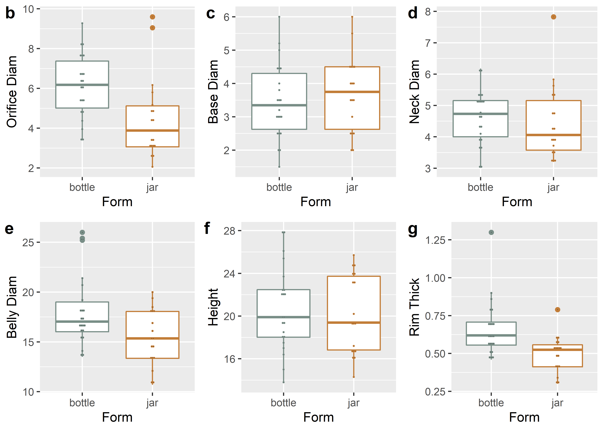
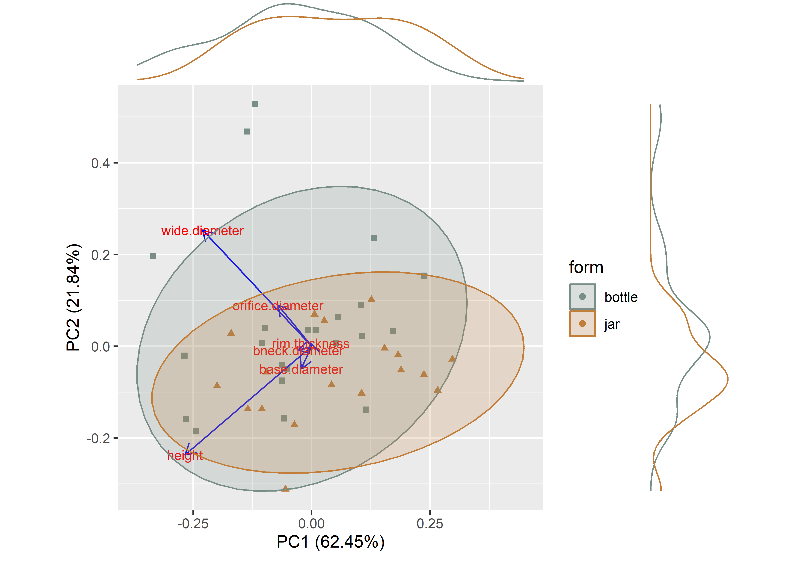
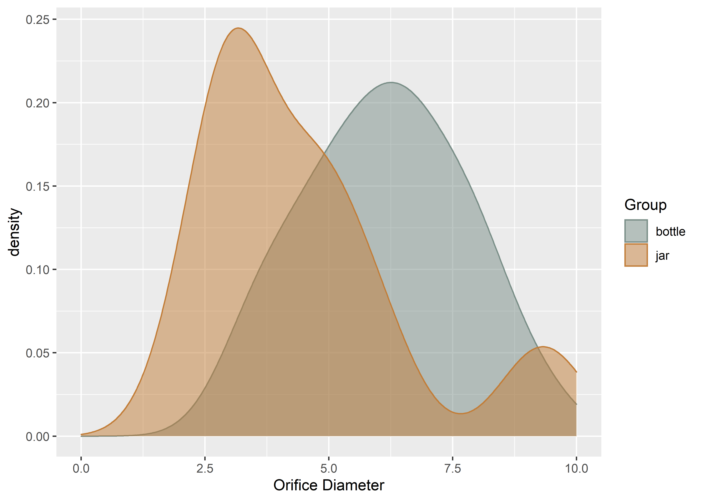
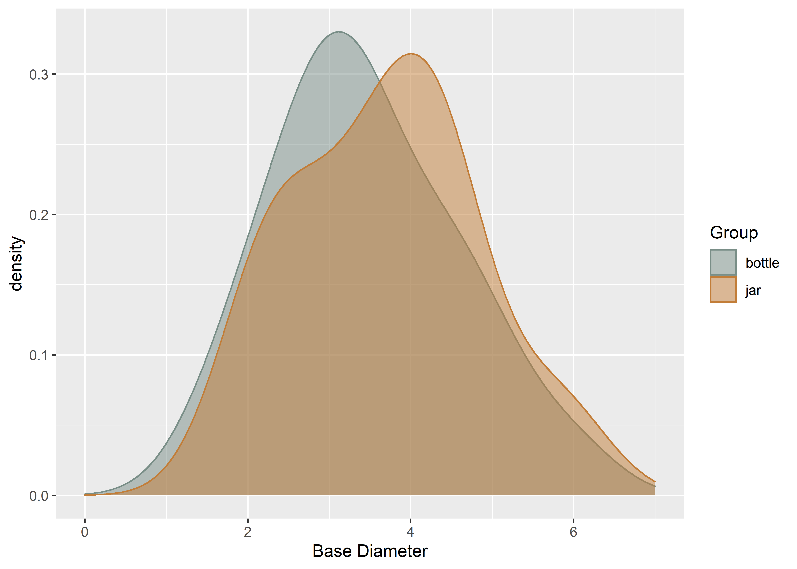
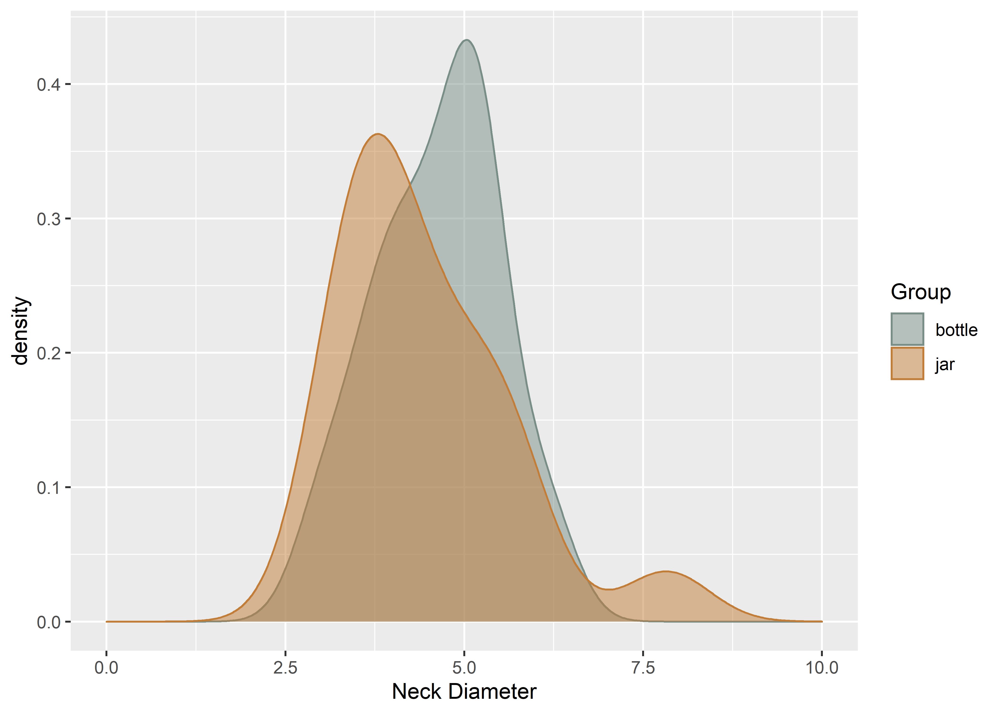
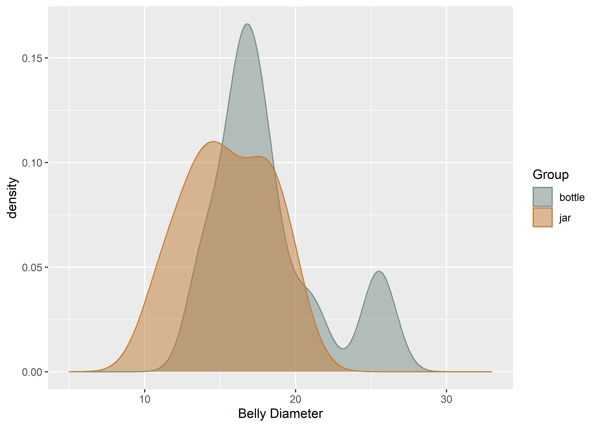
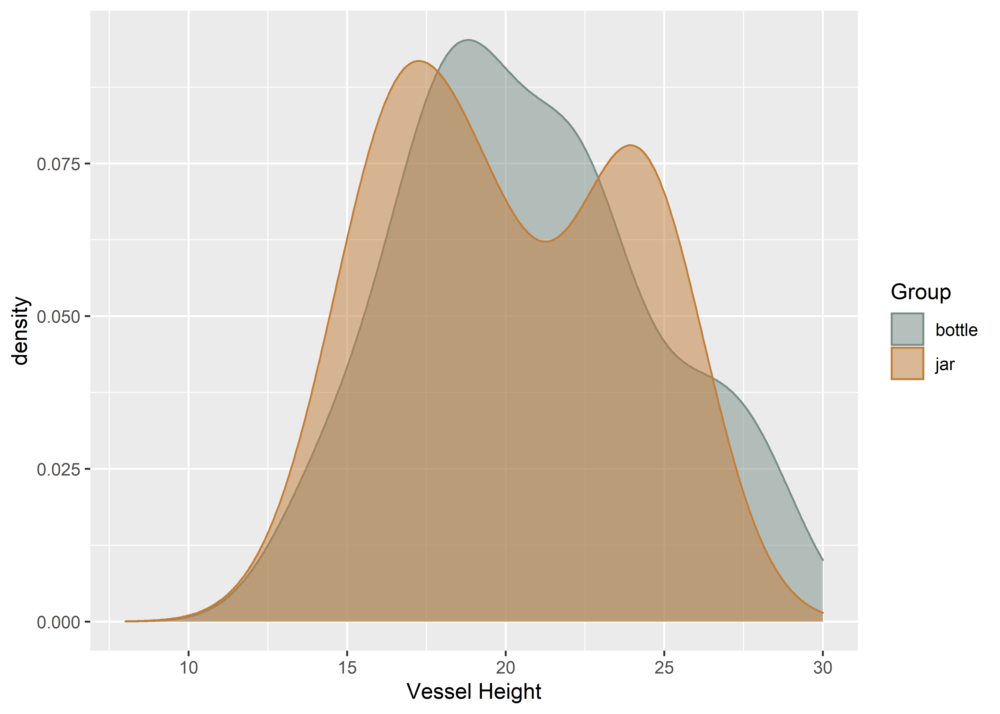

Chapter 1 Linear Chimú vessel metrics
# install required analysis packages
devtools::install_github("tidyverse/tidyverse")## Skipping install of 'tidyverse' from a github remote, the SHA1 (663456eb) has not changed since last install.
## Use `force = TRUE` to force installationdevtools::install_github("mlcollyer/RRPP")## Skipping install of 'RRPP' from a github remote, the SHA1 (96cab18f) has not changed since last install.
## Use `force = TRUE` to force installationdevtools::install_github("kassambara/ggpubr")## Skipping install of 'ggpubr' from a github remote, the SHA1 (ac5a01f5) has not changed since last install.
## Use `force = TRUE` to force installationdevtools::install_github('sinhrks/ggfortify')## Skipping install of 'ggfortify' from a github remote, the SHA1 (4908dc00) has not changed since last install.
## Use `force = TRUE` to force installation# load libraries
library(here)
library(tidyverse)
library(RRPP)
library(ggpubr)
library(ggfortify)
library(cluster)
library(wesanderson)
library(ggExtra)1.1 Load data + define variables
data <- read.csv("potmeas.csv", header = TRUE, as.is = TRUE)
# define variables
od <- data$orifice.diameter # orifice diameter
bd <- data$base.diameter # base diameter
nd <- data$bneck.diameter # neck diameter
bl <- data$wide.diameter # belly diameter
h <- data$height # height
rt <- data$rim.thickness # rim thickness
gp <- data$form # bottle or jar1.2 Boxplots for variable by group
# boxplot of orifice diameter ~ group
odgroup <- ggplot(data, aes(x = gp, y = od, color = gp)) +
geom_boxplot() +
geom_dotplot(binaxis = 'y',stackdir = 'center',dotsize = 0.3) +
scale_colour_manual(values = wes_palette("Moonrise2")) +
labs(x = "Form", y = "Orifice Diam") +
theme(legend.position = "none")
# boxplot of base diameter ~ group
bdgroup <- ggplot(data, aes(x = gp, y = bd, color = gp)) +
geom_boxplot() +
geom_dotplot(binaxis = 'y',stackdir = 'center',dotsize = 0.3) +
scale_colour_manual(values = wes_palette("Moonrise2")) +
labs(x = "Form", y = "Base Diam") +
theme(legend.position = "none")
# boxplot of neck diameter ~ group
ndgroup <- ggplot(data, aes(x = gp, y = nd, color = gp)) +
geom_boxplot() +
geom_dotplot(binaxis = 'y',stackdir = 'center',dotsize = 0.3) +
scale_colour_manual(values = wes_palette("Moonrise2")) +
labs(x = "Form", y = "Neck Diam") +
theme(legend.position = "none")
# boxplot of belly diameter ~ group
blgroup <- ggplot(data, aes(x = gp, y = bl, color = gp)) +
geom_boxplot() +
geom_dotplot(binaxis = 'y',stackdir = 'center',dotsize = 0.3) +
scale_colour_manual(values = wes_palette("Moonrise2")) +
labs(x = "Form", y = "Belly Diam") +
theme(legend.position = "none")
# boxplot of height ~ group
hgroup <- ggplot(data, aes(x = gp, y = h, color = gp)) +
geom_boxplot() +
geom_dotplot(binaxis = 'y',stackdir = 'center',dotsize = 0.3) +
scale_colour_manual(values = wes_palette("Moonrise2")) +
labs(x = "Form", y = "Height") +
theme(legend.position = "none")
# boxplot of rim thickness ~ group
rtgroup <- ggplot(data, aes(x = gp, y = rt, color = gp)) +
geom_boxplot() +
geom_dotplot(binaxis = 'y',stackdir = 'center',dotsize = 0.3) +
scale_colour_manual(values = wes_palette("Moonrise2")) +
labs(x = "Form", y = "Rim Thick") +
theme(legend.position = "none")
# render figure
sitefigure<-ggarrange(odgroup, bdgroup, ndgroup, blgroup, hgroup, rtgroup,
labels = c("a","b","c","d","e","f"),
ncol = 3, nrow = 2)## Bin width defaults to 1/30 of the range of the data. Pick better value with `binwidth`.
## Bin width defaults to 1/30 of the range of the data. Pick better value with `binwidth`.
## Bin width defaults to 1/30 of the range of the data. Pick better value with `binwidth`.
## Bin width defaults to 1/30 of the range of the data. Pick better value with `binwidth`.
## Bin width defaults to 1/30 of the range of the data. Pick better value with `binwidth`.
## Bin width defaults to 1/30 of the range of the data. Pick better value with `binwidth`.sitefigure

Figure 1.1: Boxplots of orifice diameter, base diameter, neck diameter, belly diameter, height, and rim thickness for the anthropomorphic, phytomorphic, and zoomorphic Chimú vessels used in this study.
1.3 Principal Components Analysis for group
# set plot parameters to plot by group
df <- data[c(3:8)]
pch.gps.gp <- c(15,17)[as.factor(gp)]
col.gps.gp <- wes_palette("Moonrise2")[as.factor(gp)]
## pca plot
pca <- autoplot(prcomp(df),
data = data,
asp = 1,
shape = pch.gps.gp,
colour = "form",
variance_percentage = TRUE,
loadings = TRUE,
loadings.colour = 'blue',
loadings.label = TRUE,
loadings.label.size = 3,
frame = TRUE,
frame.type = 't') +
scale_fill_manual(values = wes_palette("Moonrise2")) +
scale_colour_manual(values = wes_palette("Moonrise2"))
ggMarginal(pca, groupColour = TRUE)

Figure 1.2: Results of Principal Components Analysis for linear metrics associated with the Chimu vessels used in this study (gray squares, anthropomorphic; orange triangles, phytomorphic; tan circles, zoomorphic).
1.4 Density plots for variable ~ group
1.4.1 Orifice diameter ~ group
# density plot for orifice diameter by group
Group <- data$form
ggplot(data, aes(x = od, fill = Group, colour = Group)) +
geom_density(alpha = .5) +
scale_fill_manual(values = wes_palette("Moonrise2")) +
scale_colour_manual(values = wes_palette("Moonrise2")) +
xlim(0,10) +
labs(x = 'Orifice Diameter', y = 'density')

(#fig:density.gp.od)Density plot for orifice diameter by group.
1.4.2 Base diameter ~ group
# density plot for base diameter by group
ggplot(data, aes(x = bd, fill = Group, colour = Group)) +
geom_density(alpha = .5) +
scale_fill_manual(values = wes_palette("Moonrise2")) +
scale_colour_manual(values = wes_palette("Moonrise2")) +
xlim(0,7) +
labs(x = 'Base Diameter', y = 'density')

(#fig:density.gp.bd)Density plot for base diameter by group.
1.4.3 Neck diameter ~ group
# density plot for neck diameter by group
ggplot(data, aes(x = nd, fill = Group, colour = Group)) +
geom_density(alpha = .5) +
scale_fill_manual(values = wes_palette("Moonrise2")) +
scale_colour_manual(values = wes_palette("Moonrise2")) +
xlim(0,10) +
labs(x = 'Neck Diameter', y = 'density')

(#fig:density.gp.nd)Density plot for neck diameter by group.
1.4.4 Belly diameter ~ group
# density plot for belly diameter by group
ggplot(data, aes(x = bl, fill = Group, colour = Group)) +
geom_density(alpha = .5) +
scale_fill_manual(values = wes_palette("Moonrise2")) +
scale_colour_manual(values = wes_palette("Moonrise2")) +
xlim(5,33) +
labs(x = 'Belly Diameter', y = 'density')

(#fig:density.gp.bl)Density plot for belly diameter by group.
1.4.5 Height ~ group
# density plot for height by group
ggplot(data, aes(x = h, fill = Group, colour = Group)) +
geom_density(alpha = .5) +
scale_fill_manual(values = wes_palette("Moonrise2")) +
scale_colour_manual(values = wes_palette("Moonrise2")) +
xlim(8,30) +
labs(x = 'Vessel Height', y = 'density')

(#fig:density.gp.h)Density plot for vessel height by group.
1.5 Analyses of Variance (ANOVA) for variable ~ group
1.5.1 ANOVA Orifice diameter ~ group
# anova = orifice diameter ~ group
gp.od <- lm.rrpp(od ~ gp,
SS.type = "I",
data = data,
iter = 9999,
print.progress = FALSE)
anova(gp.od)##
## Analysis of Variance, using Residual Randomization
## Permutation procedure: Randomization of null model residuals
## Number of permutations: 10000
## Estimation method: Ordinary Least Squares
## Sums of Squares and Cross-products: Type I
## Effect sizes (Z) based on F distributions
##
## Df SS MS Rsq F Z Pr(>F)
## gp 1 26.339 26.3392 0.16886 7.7205 2.1794 0.0091 **
## Residuals 38 129.640 3.4116 0.83114
## Total 39 155.979
## ---
## Signif. codes: 0 '***' 0.001 '**' 0.01 '*' 0.05 '.' 0.1 ' ' 1
##
## Call: lm.rrpp(f1 = od ~ gp, iter = 9999, SS.type = "I", data = data, print.progress = FALSE)1.5.2 ANOVA Base diameter of Chimú vessels
# anova = base diameter ~ group
gp.bd <- lm.rrpp(bd ~ gp,
SS.type = "I",
data = data,
iter = 9999,
print.progress = FALSE)
anova(gp.bd)##
## Analysis of Variance, using Residual Randomization
## Permutation procedure: Randomization of null model residuals
## Number of permutations: 10000
## Estimation method: Ordinary Least Squares
## Sums of Squares and Cross-products: Type I
## Effect sizes (Z) based on F distributions
##
## Df SS MS Rsq F Z Pr(>F)
## gp 1 0.548 0.54837 0.01103 0.4239 0.0019808 0.5089
## Residuals 38 49.163 1.29375 0.98897
## Total 39 49.711
##
## Call: lm.rrpp(f1 = bd ~ gp, iter = 9999, SS.type = "I", data = data, print.progress = FALSE)1.5.3 ANOVA Neck diameter of Chimú vessels
# anova = neck diameter ~ group
gp.nd <- lm.rrpp(nd ~ gp,
SS.type = "I",
data = data,
iter = 9999,
print.progress = FALSE)
anova(gp.nd)##
## Analysis of Variance, using Residual Randomization
## Permutation procedure: Randomization of null model residuals
## Number of permutations: 10000
## Estimation method: Ordinary Least Squares
## Sums of Squares and Cross-products: Type I
## Effect sizes (Z) based on F distributions
##
## Df SS MS Rsq F Z Pr(>F)
## gp 1 0.315 0.31485 0.00784 0.3002 -0.1968 0.5862
## Residuals 38 39.860 1.04895 0.99216
## Total 39 40.175
##
## Call: lm.rrpp(f1 = nd ~ gp, iter = 9999, SS.type = "I", data = data, print.progress = FALSE)1.5.4 ANOVA Belly diameter of Chimú vessels
# anova = belly diameter ~ group
gp.bl <- lm.rrpp(bl ~ gp,
SS.type = "I",
data = data,
iter = 9999,
print.progress = FALSE)
anova(gp.bl)##
## Analysis of Variance, using Residual Randomization
## Permutation procedure: Randomization of null model residuals
## Number of permutations: 10000
## Estimation method: Ordinary Least Squares
## Sums of Squares and Cross-products: Type I
## Effect sizes (Z) based on F distributions
##
## Df SS MS Rsq F Z Pr(>F)
## gp 1 66.64 66.638 0.1406 6.2167 1.9955 0.0138 *
## Residuals 38 407.33 10.719 0.8594
## Total 39 473.97
## ---
## Signif. codes: 0 '***' 0.001 '**' 0.01 '*' 0.05 '.' 0.1 ' ' 1
##
## Call: lm.rrpp(f1 = bl ~ gp, iter = 9999, SS.type = "I", data = data, print.progress = FALSE)1.5.5 ANOVA Height of Chimú vessels
# anova = height ~ group
gp.h <- lm.rrpp(h ~ gp,
SS.type = "I",
data = data,
iter = 9999,
print.progress = FALSE)
anova(gp.h)##
## Analysis of Variance, using Residual Randomization
## Permutation procedure: Randomization of null model residuals
## Number of permutations: 10000
## Estimation method: Ordinary Least Squares
## Sums of Squares and Cross-products: Type I
## Effect sizes (Z) based on F distributions
##
## Df SS MS Rsq F Z Pr(>F)
## gp 1 3.44 3.4391 0.00618 0.2361 -0.32432 0.6322
## Residuals 38 553.45 14.5644 0.99382
## Total 39 556.89
##
## Call: lm.rrpp(f1 = h ~ gp, iter = 9999, SS.type = "I", data = data, print.progress = FALSE)